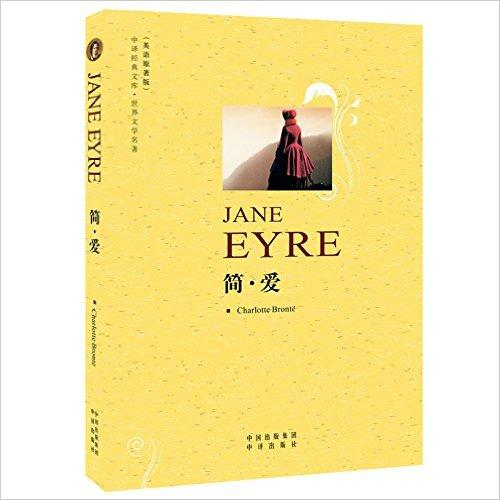
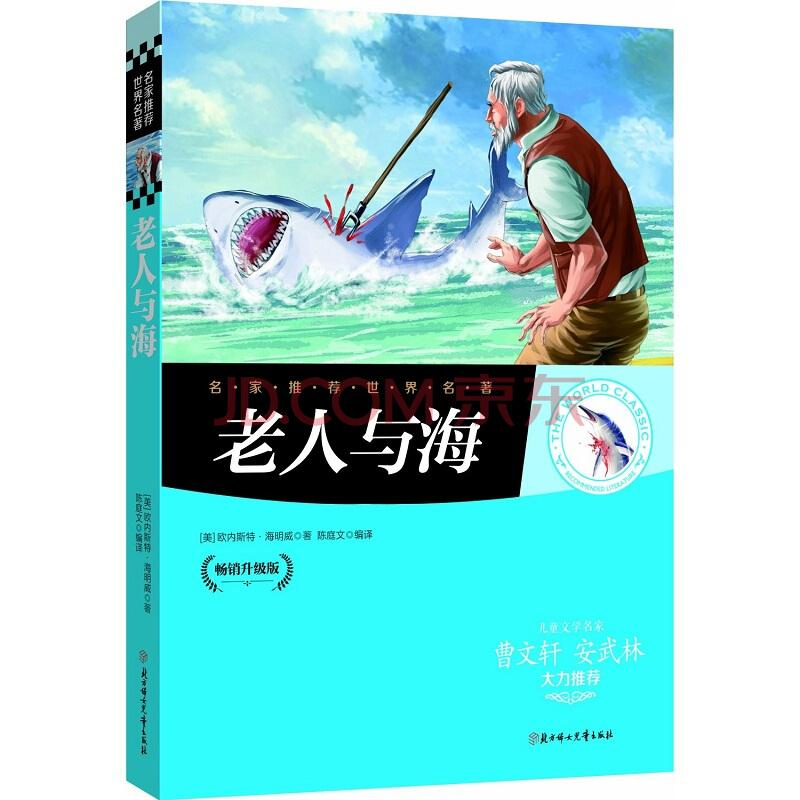
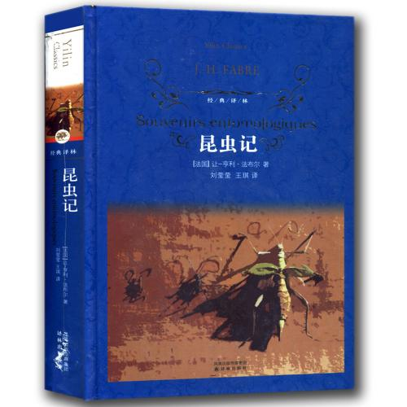

《简·爱》（Jane Eyre）是英国女作家夏洛蒂·勃朗特创作的长篇小说，是一部具有自传色彩的作品。 作品讲述一位从小变成孤儿的英国女子在各种磨难中不断追求自由与尊严，坚持自我，最终获得幸福的故事。小说引人入胜地展示了男女主人公曲折起伏的爱情经历，歌颂了摆脱一切旧习俗和偏见，成功塑造了一个敢于反抗，敢于争取自由和平等地位的妇女形象。 |
 |
|  | 《老人与海作者是[美]欧内斯特·海明威。《老人与海》它以简洁有力的文字，讲述的不过是一个老人出海捕鱼的简单故事，却象征性地表达了一个具有普遍意义的主题：一个人应该如何对待挑战、挫折乃至失败。它塑造了文学史上最典型的硬汉形象，颂扬了虽败犹荣的斗争精神，是海明威最具代表性的作品，也是作家本人最喜欢的作品。 |
《昆虫记》（Souvenirs Entomologiques）又称《昆虫世界》《昆虫物语》《昆虫学札记》或《昆虫的故事》，是法国昆虫学家、文学家让-亨利·卡西米尔·法布尔创作的长篇生物学著作，共十卷。 |
 |